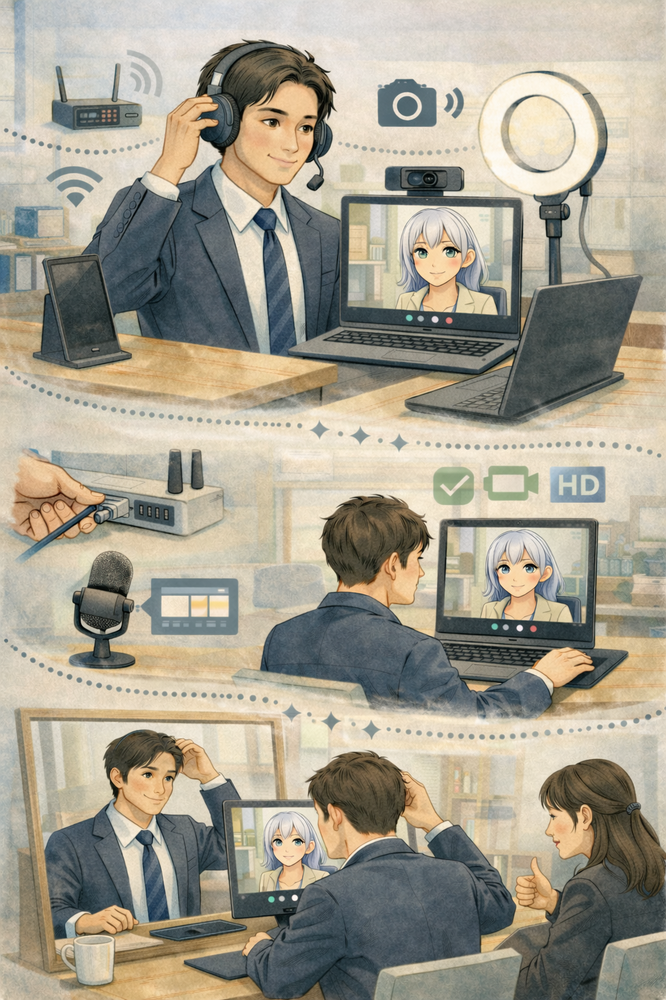

注釈
第1章では、Web面接の前に確認しておきたい項目を整理します。
面接前に慌てないために、使用機材、音量、背景、通知、会議ツールなどの基本環境を先に整えておく章です。
第1章の目次ナビゲーション
各サムネイルをクリックすると、第1章の各項目へ移動します。
Section 1-1
1-1
1-1：使用機材の確認
パソコン、カメラ、マイク、イヤホンなど、面接に使う機材が安定して使える状態かを確認します。
Section 1-2
1-2
1-2：音量調整とデスクトップレイアウト
聞き取りやすい音量に整え、必要な資料やウィンドウをすぐ開けるよう、デスクトップの配置を整えます。
Section 1-3
1-3
1-3：映像・背景・環境と通知の停止
カメラ映り、背景、部屋の明るさ、周囲の音、PCやスマートフォンの通知などを事前に止めておきます。
Section 1-4
1-4
1-4：使用されやすいWeb会議ツール
Zoom、Google Meet、Microsoft Teamsなど、案内されやすいツールの画面構成や使い方を把握します。
